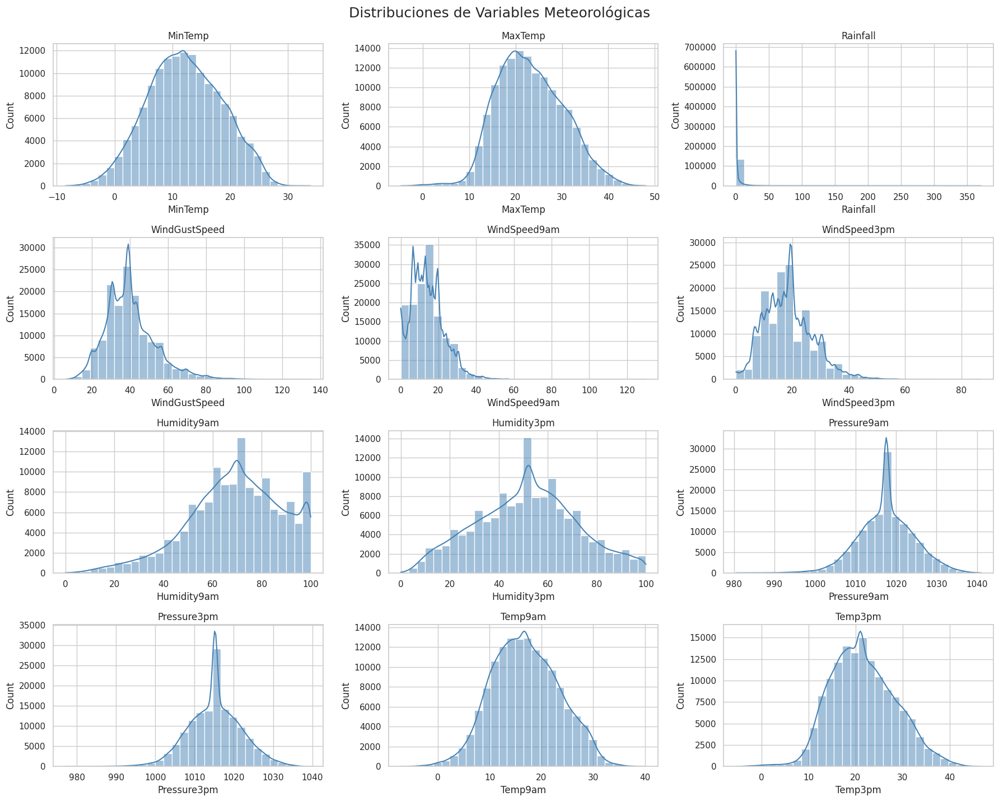
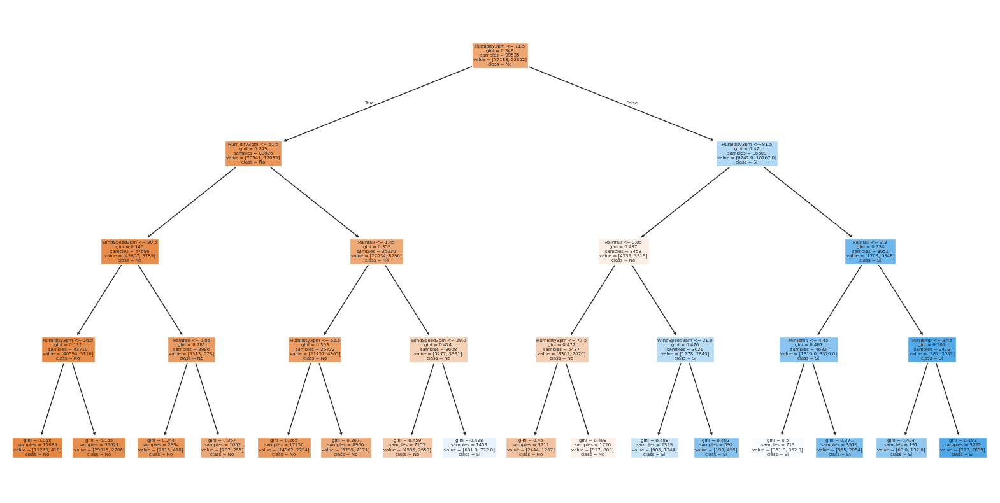
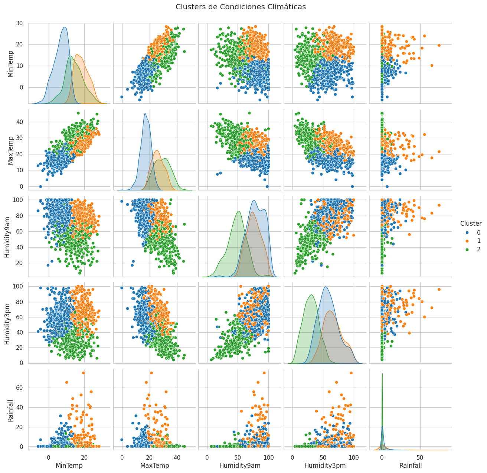

Exploración de Datos
Se analizaron variables meteorológicas como temperatura, humedad, viento y precipitación, a través de diferentes modelos de minería de datos.
Distribuciones de Variables
Matriz de Correlación
rbol de Decisión
Clusters Climáticos
Notebook
Puedes revisar el código y los modelos aplicados en el siguiente notebook: